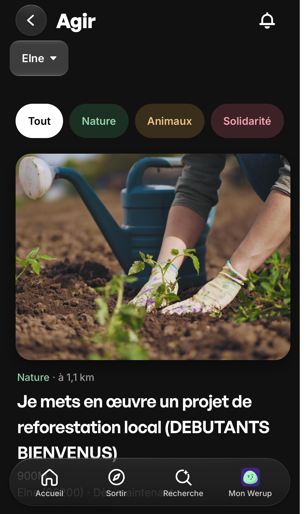
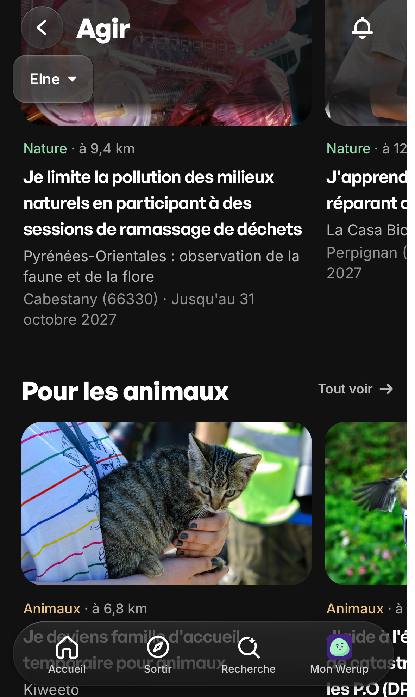
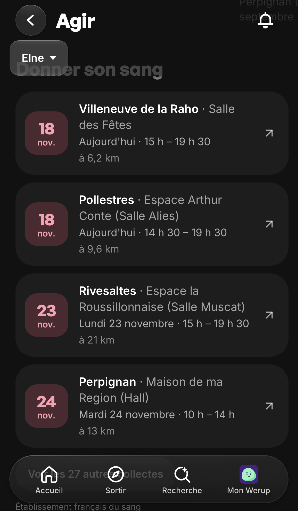
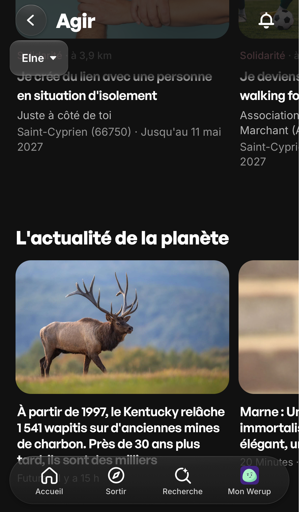
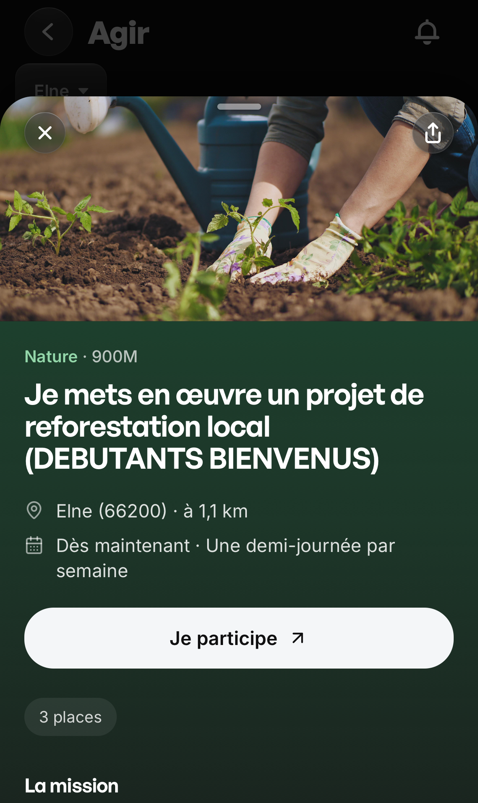
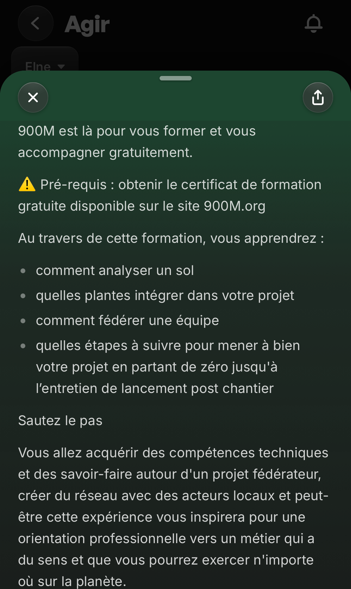
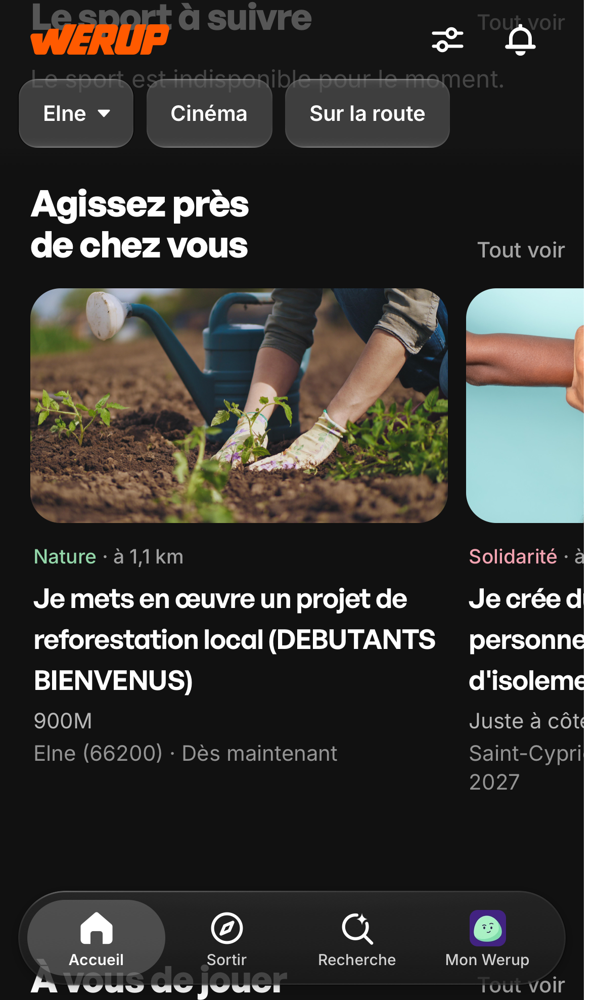
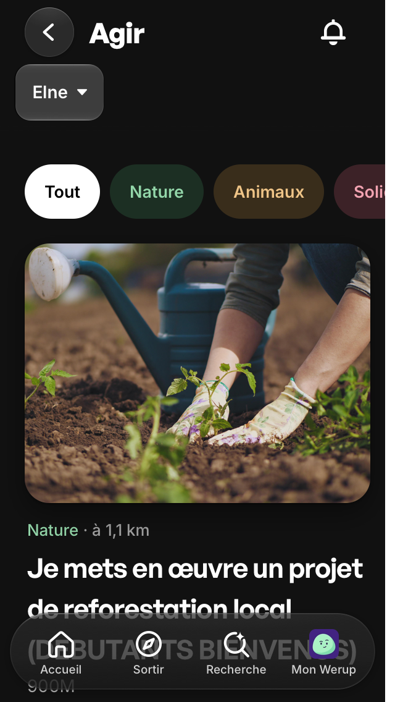
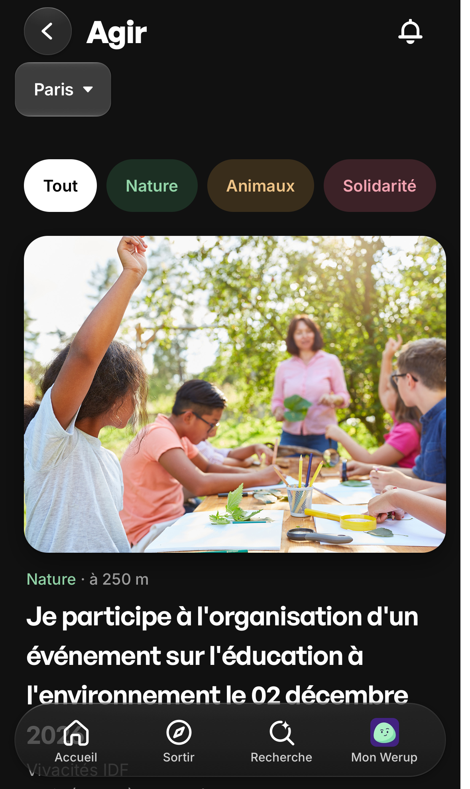

Agir : les vraies missions près de chez vous (avant publication)
18/11/2026 · Branche chantier/agir-planete, commit de154e78b — aperçu, RIEN sur werup.app. Données RÉELLES du 18/11 : missions de l'API Engagement (JeVeuxAider.gouv.fr), collectes de don du sang de l'EFS, actualité Futura / 20 Minutes / Sciences et Avenir. Ville réglée sur Elne (Paris pour la dernière). Captures WebKit, profils iPhone.








